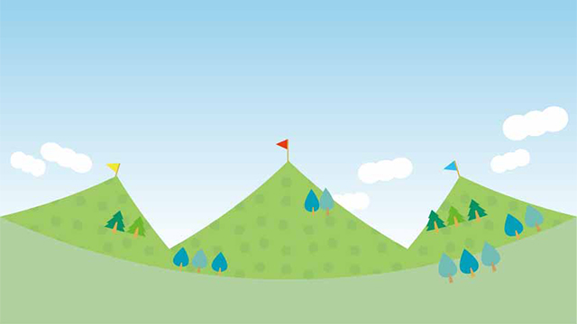

「子どもが言うことを聞いてくれません。どうすればいいでしょうか」
「子どもが進んで勉強するようになるためにはどうしたらよいのでしょう」
「人間関係がうまくいきません。どうすればいいですか」
このように私たちが何かを達成するため、物ごとをうまくやるためには、まず「どうすれば」と方法を問います。ありたい状態、到達したい場所よりもそこへ行く道すじのほうを考えてしまう。目標よりも手段方法にフォーカスするということです。
その結果、理想の目標そのものより手段方法を考えることに多大のエネルギーを使い、かんじんの目標はかえって遠ざかることに気づかないようです。
手段方法がいつの間にか目的になっているからです。手段と目的を取り違えると言いますが実際私たちはそのような本末転倒をよく犯します。
これは教育の世界でもよくあります。というかむしろ教育を通じてそのような誤った思いこみが植えつけられ再生産されているといえましょう。
学校などで、ノートはきれいに書くべきだとか板書を正確に写すようにうるさくしつけてしまうと、内容も意味も考えずにひたすら「美しいノート」を作成する子が出来上がります。多大な労力をかけて印刷したかのようなきれいなノートを作る子が、全く内容を理解していなかったりします。
同じく何年生は１日何時間などと学校が家庭学習時間を決めていることも多くそれを機械的に守らせようとします。
親もその「規則」を守って、5年生だから1時間やりなさいなどと強制したりしますが無意味です。
当たり前ですが、この場合の目標は子どもが「学習内容を理解」し「学力がつく」ことにあるのであって、ノートをきれいにとか1日何時間とかは数ある手段（方法）の１つであってそれ自体は目的ではありません。
極端にいえば、ノートを取ろうが取るまいが１日何時間勉強しようがしまいが、学力がつけば良いのであって、方法手段は各人の性格や個性に見合ったものを各人が見つけるべきものだからです。
「手段」を考えると手段が増える
これは子どもの勉強だけでなく、私たち大人も日常的にやっていることではないでしょうか。「人間関係をもっとうまくやりたい。どうすれば・・・」「仕事で認められたいがどうすれば」「売り上げをもっと伸ばすにはどうするか」と常に方法や手段を講じようとします。
○○するにはどうすれば？というのはそれくらい私たちの頭に強力に刷り込まれた発想であり、普段私たちはそのことをほとんど疑う余地のない当然の考え方だと信じているわけです。
しかし実はこの条件反射的発想は、物ごとを達成したり問題解決する上で有効とは限らないのです。
理由の１つは先ほど言ったように、手段方法にフォーカスするあまり肝心の目標そのものが二義的な重要性しか与えられず、目標達成に使われるべきエネルギーが浪費されるからです。
子どもたちの勉強の例では、ノートを取ることや機械的に勉強時間を強制されることで行動がアリバイとして「勉強していることを装う方向」に向かい、肝心の「次のテストで良い点取るぞ」とか「勉強の内容を知ろう」という当初の目標を見失わせます。
これは大人も同じです。残念ながら会社などでも「文句を言われない」程度に努力するフリに多大なエネルギーを使う人も見られます。
もちろんそんな人は少数で、大部分の人は仕事上でも何らかの目標があり真面目に励んでいるでしょうがそれでも「どうすれば」に焦点を当てすぎるために、方法論の議論や策定にばかりエネルギーを奪われ空回りすることが多いのです。
というのも方法手段にフォーカスするとさらにあらたな方法手段がほぼ自動的にわき上がってくるからです。
たとえば「もっと生活を安定させたい」と考えている人がいるとします。
そのためにどうするかと考えそして「もっとお金があれば」と思い至ります。そのためには今の仕事のまま頑張るか、もっと条件の良い所へ転職するか迷います。
転職すると決まれば今度は就活を考え、就活のためには求人広告を見るか職安に行こうかと悩み、面接ではどう乗り切れば良いか考えます。あるいは少しでも有利にと資格を取ろうとするかもしれません。そしてそのためには専門学校へ通うことを考えたりします。
そしてさらにそのためには・・・と手段を考え始めるわけです。
当初の「生活を安定させる」はどこかへ行ってしまいました!
こうして「手段・方法」にフォーカスすることで新たに派生的な手段方法が際限なく生み出されるのです。
AするにはBしなければならない→BするためにはCが→CするためにはDが・・・というふうに手段のための手段が増殖していきます。
結果、いつまでたっても目標には届かないということになるわけです。
正しい方法を求め過ぎない
私たちが手段方法にこだわる理由は以上の他にもあります。
私たちは子どものころから教育や科学的な物の見方を教えこまれた結果、因果論的な発想で何でもとらえてしまう傾向があります。
「ああすればこうなる」という考え方です。
AすればBになる。たとえば「一生けん命勉強すれば良い点が取れる」というふうに。
この考えがしみこんでいるから、逆にBになるためにはAしなければならないと反射的に思考してしまうのです。
「良い点数を取るためには一生けん命がんばらなければダメだ」という方法論（マニュアル）がこうして成立します。
しかし、この因果論に基づく方法論は、たとえば物質的な現象などせまい範囲きわめて限定的な領域なら正しいのですが、人間の心理やもっと複雑な社会的領域―様々な要素が目に見えない形で絡み合っているところ―では有効ではありません。
「どうすれば厳しい上司に認めてもらえるか」
「どうすれば売り上げ目標を達成できるか」
「どうすればヒット商品を開発できるか」
「どうすれば好きな人に振り向いてもらえるか」
このような問いに、決まった答えすなわち正しい方法手段などあるでしょうか。
唯一無二の正解などあるでしょうか。
そう。ないのです!
私たちの多くは合理的思考に慣らされているために、目標に達する（成功や理想夢が叶うこと）正しい道筋が存在するとどこかで信じています。
自分がうまくいかないのはその正しい方法（やり方）が知らないだけだ。それが分かれば、あるいはシャニムニに努力すれば―努力も手段方法―達成されるはずだと信じているのです。
書店に行けばその手の「成功マニュアル」が常に山積みされていることからも、いかに世の中の多くの人が「方法」を求めているか分かります。
しかし、もうお分かりのようにいくら方法手段を研究してもうまくいくことは少ないのです。万人に当てはまる正しい「方法」など存在していないからです。
目標だけにフォーカスする
では、目標を達成したり物事がうまくいくときは何が起こっているのでしょうか。
以下私が述べることは、１つの見解であり提案という意味で受けとめて欲しいと思います。
じゃないと新たな「方法・手段」になる可能性があるからです。
また、頭で理解しよう解釈しようとするのでなくできるだけ感覚的につかんで頂きたい。
マインドではなくハートでの理解をお願いします。
さて私の「提案」は以下の2つです。
1.あくまで目標（理想、夢）にフォーカスし、手段は二義的なものと考える
2.目標に向かって努力するが結果に執着しない
最初の「目標にフォーカス」は当たり前すぎて拍子抜けするかもしれません。
しかし、何度も言うように多くの人は「どうすればよいか」にばかりエネルギーを浪費するあまり、目標それ自体を忘れ去ることが多いのです。
また、意外に多くの人が心の奥底では目標達成を恐れていて、そのために手段にばかり走っていることもあります。
たとえば「成功して有名になりたい」という心の中に、有名になったら束縛され自由がなくなるという思いがあるなら、意欲と相反する力が葛藤してうまくいかないでしょう。
志望校に合格したいと頭では願っていても、そのためにはたくさんの勉強が必要だし、もし受かってもついて行けないかもと心で思っていたら、表むきいくら頑張っても目標には届かないでしょう。
しかし「目標にフォーカス」することで本当にその目標が心からのものなのか、その目標を達成して実際は何を得たいのか十分に理解することができます。
その結果、本当に真実その目標が自分にとって必要だと深く納得すれば、そのための方法手段は自ずと分かってしまうものです。
何をすべきかがほとんど考えなくても分かるはずなのです。勝手に身体が動き、必要なものは自ずと整い、気がついたら達成していた。
これが真実なのです。目標達成の本当の姿です。
後で振り返れば「ああ、あんな方法でやって来たのだな」と、始めてそこに至る道が見えるのです。先に道があるのではなく動き出してみたら後ろに道ができていたということです。
うまくいくかどうかは気にしない
物事はうまく進むときも、うまく進まないときもあります。そこには予想していなかった「想定外」のハプニングが常に起こり続けるからです。
なのであらかじめきちんと計画をたて、正しいと感じる方法を実行しても想定外を想定していなかったら挫折しやすいのです。
つまりきちんと考えられた手段方法は、きちんとしているからこそ可能性を制限してしまうということです。これはパラドックスかもしれません。
だから目標という最終到着点だけを見ていればよいのです。「方法」という合理的思考（計算）にばかりエネルギーを使わず、そのエネルギーの方向づけを目標そのものに置き、内部からわき上がる行動欲求に身を任せるのがベストです。
私自身、振り返れば大きな目標ほどあらかじめ想定していた方法以外、つまり思いがけないかたちで達成できていたことが多いのです。
さらに大切なことがあります。
2の「努力はするが執着しない」です。
目標にフォーカスしたら目の前の「やるべき事」をただひたすら行い、結果についてはアレコレ気をもんだり心配しないのがコツです。
そしてそのときの心境は「うまく行こうが行くまいが気にしない。どちらでも構わない」
が正解となります。
失敗する人の多くは、もし～ができなかったらどうしようとか「ガンバってもダメだったらムダではないか」などと、やる前から疑心暗鬼になり目標へ向かう行動エネルギーを空費させています。
これが最悪です。
従って最初から「自分にはこの目標を達成する力がある」「この目標が達成されることは自分だけではなく周囲にも良い影響を与えることができる」という確信が必要ということになります。
うまくいく人の多くは概して自己を信頼している、いわゆる自己肯定感、自己評価の高い人たちです。
まとめると次のようになります。
目標にフォーカス→方法手段は自ずとわき上がる→目の前のやるべきことに集中→結果にこだわらない
そしてメンタル的には自己を信頼し続けるということです。
私たちは教育や常識に条件づけられて物事に反応します。
何かを成すとき、すぐに「どうやって？」と問いかけてしまう。
「どうやって？」は正しい答え（方法）があることが前提になっています。
しかし、何度も言うように唯一絶対の正解はないのです。
「どうすれば？」という発想がわいたらそれは既に危険信号だと心得ましょう。
どうすればもこうすればもない!
こう切って捨てましょう。
そして信じたことを次々実行していく。
常に想定外が起こること、未知な出来事を恐れず柔軟に対処し続ける。
結局「失敗を恐れない心」、これがもっとも重要なポイントなのです。